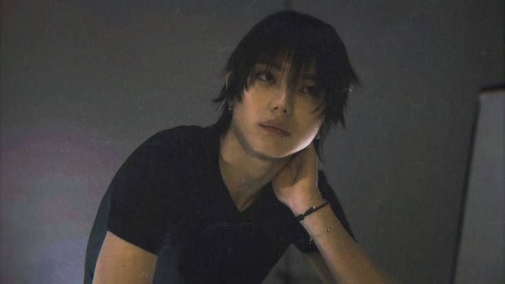

Ohyul (오율)
| Nama lengkap | Kwon Oh-yul (권오율) |
|---|---|
| Lahir | 21 Januari 2006 |
| Asal | Gimpo, Korea Selatan |
| Pendidikan | Hanlim Arts High School (jurusan Practical Music) |
Fakta: Bisa bermain gitar.
Karya: Penulis lagu "Saucin'"; penulis, komposer, dan penata musik "Never Let Go"; komposer lagu "Remedy" milik Jay Park.